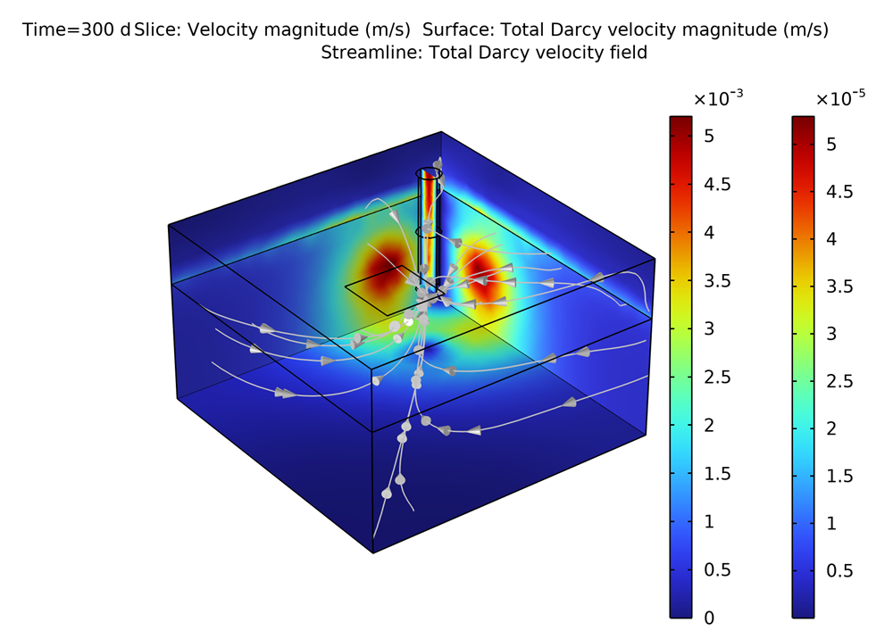
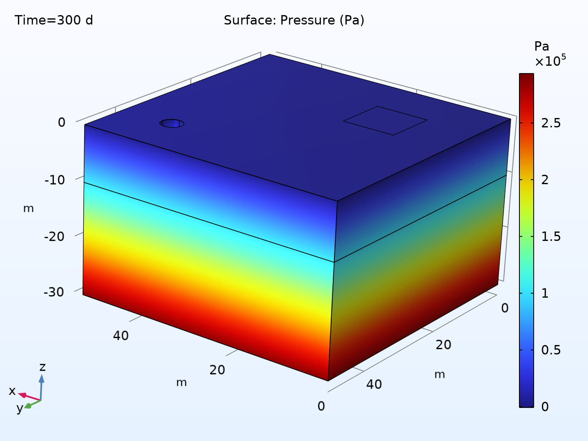
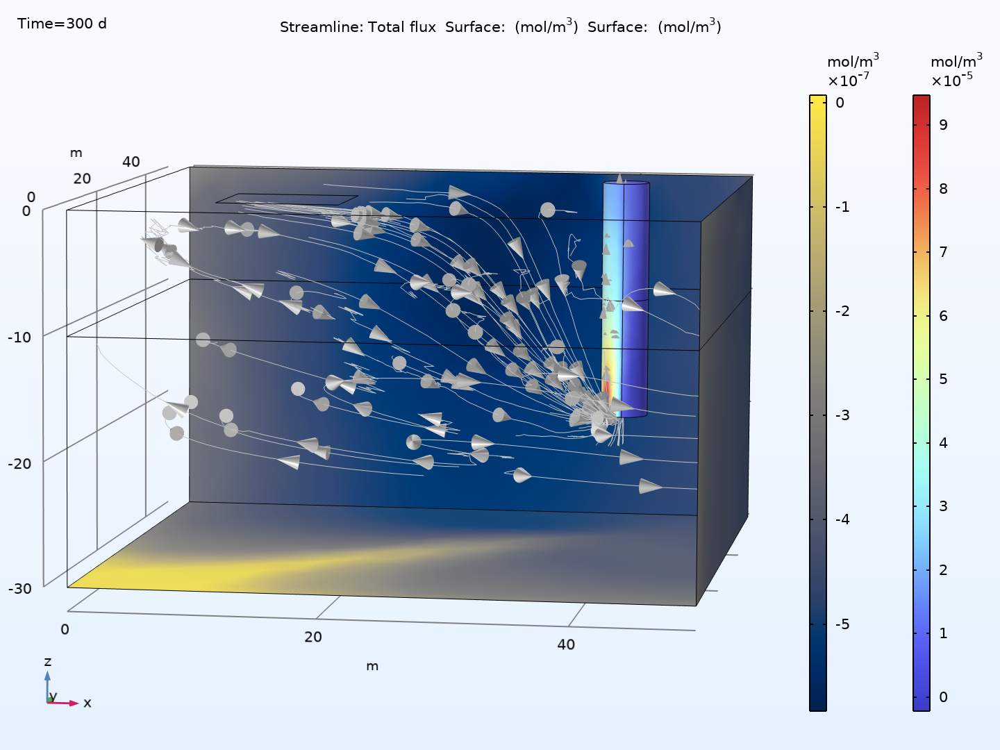

🧪 Modelling Groundwater Contamination

Simulation of contaminant transport in groundwater using COMSOL.
Groundwater does not advertise its troubles. When a chemical spill hits the surface, the danger does not always end with a quick cleanup. Beneath our feet, water slowly carries that contaminant through unsaturated zones, aquifers, and in some cases, straight into our pumping wells. This project brings that quiet process to light using COMSOL Multiphysics. This simple conceptual model uses coupled physics; i.e. fluid flow through soil (Richards’ Equation), saturated zone transport (Darcy’s Law), and velocity-driven flow near the well (Stokes flow), to reveal how a small surface event can spiral into a major water quality problem.
I explored how a contaminant released at the surface migrates through the subsurface and eventually reaches a groundwater well. This system is broken down into three interconnected domains, as shown in Figure 1a and b.
Figure 1a: Conceptual model of the project.

Figure 1b: Geometric model of the project.
1. The Partially Saturated Zone (Vadose Layer)
The topmost layer contains both air and water in soil pores. Water—and contaminants—move under unsaturated conditions governed by Richards’ Equation, a nonlinear PDE that accounts for variable saturation and capillary pressure.
💡 Richards’ Equation describes the movement of water in variably saturated soils. It's essential for capturing the infiltration dynamics before water reaches the water table.
2. The Fully Saturated Zone (Aquifer)
Below the vadose zone, the aquifer is fully saturated with water. Flow here is described using Darcy’s Law, which relates hydraulic head gradients to flow velocities through a porous medium.
3. The Well Domain
Water is pumped from a well modeled as a cylindrical pipe. Inside the well, flow is governed by Stokes (Creeping Flow) equations, where viscous forces dominate due to low Reynolds numbers.
Contaminant Transport Equation
The contaminant moves via advection (carried by flow) and diffusion (spreading due to concentration gradients). In porous media, diffusion is modified by tortuosity and dispersion.
⚙️ Model Implementation and Coupling Strategy
This model involves strong coupling across the three zones, handled in COMSOL using multiphysics interfaces:
- Continuity of concentration and flux is enforced at interfaces.
- Pressure continuity is ensured between unsaturated and saturated zones.
- Flow and transport equations are solved in two steps:
- Steady-state flow field is computed.
- Transient contaminant transport is simulated using that flow field.
📊 Results and Interpretations
Water Flow and Capture Zone
Figure 2: 3D image showing the velocity magnitude and streamlines in both aquifer and well domains. Left shows creeping flow in the well (Stokes), right shows Darcy flow in the porous aquifer. Pumping creates a clear capture zone.
The well actively pulls water from the aquifer, creating a steep pressure gradient. Streamlines bend toward the well, showing converging flow paths. The velocity in the well pipe is roughly 100× greater than in the aquifer, requiring separate color bars for meaningful visualization.
Pressure Distribution
Figure 3: 3D display of the pressure distribution across the model. The highest hydraulic head occurs near recharge zones; lowest head at the well. Gradients drive groundwater flow.
The natural pressure gradient and the role of pumping in altering subsurface flow. The gradient shows how the system moves water from the aquifer edges toward the well. This drives contaminant migration as well.
Contaminant Migration and Flux
Figure 4: Contaminant concentration field with streamlines of total mass flux. High concentrations are observed in the well over time. Left: Darcy domain. Right: Creeping flow domain.
The contaminant plume moves downward through the vadose zone, enters the aquifer, and is pulled toward the well. The well becomes a contamination hotspot, with concentrations rising rapidly once breakthrough occurs. This underscores the risk posed by pumping wells near surface contamination sources.
Time-Series: Breakthrough at the Well

Figure 5: Time evolution of contaminant concentration at the well outlet. Concentration sharply increases around day 50 and stabilizes near a maximum by day 180.
Initially, the well water is clean. As time progresses, the contaminant front reaches the well, causing a rapid increase in concentration. This type of time-series (breakthrough curve) is critical for estimating contamination risks, designing monitoring schedules, and planning treatment strategies.
🧠 Simplified Insights
- Water Drives Contaminant Spread: Contaminants follow the groundwater flow. Pumping creates a strong draw toward the well, pulling in pollution.
- High Risk for Wells Near Surface Spills: The model shows that even a small surface release can lead to well contamination if there is sustained pumping.
- Time Matters: There is a lag time between contamination and detection. If only snapshot data is used, you may miss the breakthrough.
- Model is Flexible: Parameters can be varied easily in COMSOL to run "what-if" scenarios—e.g., higher pumping, deeper wells, alternative source locations.
In essence, this model provides a virtual laboratory to study groundwater contamination, helping to predict the fate and transport of pollutants and evaluate remediation strategies.
Key Features
- Multi-physics simulation (Richards’, Darcy, Stokes)
- Visualizes contaminant transport and risk zones
- Supports scenario analysis for groundwater management
Technologies Used
- COMSOL Multiphysics